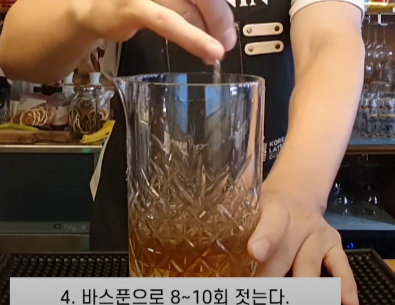
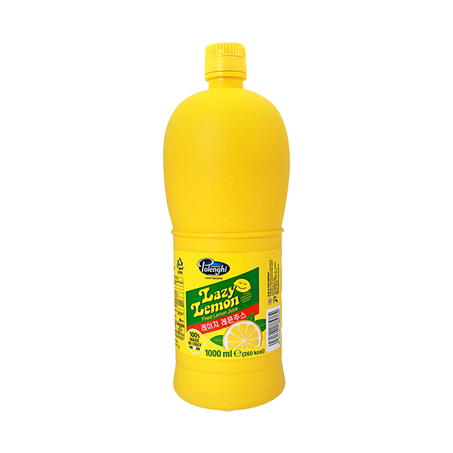

올드 패션드
| 글라스 | 기법 |
| 올드 패션드 글라스 | 빌드 |
| 가니쉬 | |
| 오렌지, 체리 | |
| 재료 | |
|
버번 위스키 1 1/2oz 파우더 설탕 1tsp 앙고스투라 비터 1dash 소다 워터 1/2oz |
|
명칭이 칵테일의 역사에서 유래한 것인데, 본래 올드 패션드는 양주, 설탕, 그리고 비터스 이 세 가지 재료를 쓴 단순한 조합의 음료였으며, 당시에는 비터드 슬링(Bittered Sling)이라 불렀다. 이후 19세기 미국에서 여러 바텐더들이 버번 위스키를 통해 이전의 단순한 맛에서 다양한 맛으로 바꾸기 위해 여러 번의 시도를 진행하게 된다. 그러나 이전의 심플한 조합의 칵테일은 수요는 여전했고, 때문에 이전의 레시피에 버번 위스키만 추가된 버번 위스키, 앙고스투라 비터, 설탕 혹은 시럽을 써서 만드는 칵테일을 ”옛날 방식” 이라는 의미의 ”Old Fashioned” 라는 이름으로 부르게 되었다고 한다. 이러한 역사와 심플함으로 인해 바리에이션이 아주 다양하고, 바의 특색을 관찰할 수 있는 음료이다.

러스티 네일
| 글라스 | 기법 |
| 올드 패션드 글라스 | 빌드 |
| 가니쉬 | |
| 없음 | |
| 재료 | |
|
스카치 위스키 1 1/2oz 드람부이 1/2oz |
|
위스키 베이스로, 여기에 ‘드람뷔’ 라 불리는 리큐르가 재료로 들어간다. 기원은 금주법 시대로 거슬러올라, 밀주의 조잡한 맛을 가리기 위해 드람뷔를 첨가한 데서 비롯되었다고 한다. 녹슨 못이라는 의미의 ‘Rusty Nail’ 명칭 자체는 1960년대에 붙여진 것으로, 칵테일의 색깔을 비유하여 붙여진 것이다. 재료와 레시피가 무척 간단하지만, 그만큼 재료의 질이 무척 중요한 칵테일. 특히 위스키의 영향을 무척 많이 받는다.
뉴욕
뉴욕을 상징한다고 할 수 있는 랜드마크인 자유의 여신상이 연상되게끔 제조한 것이 시초라고 알려져 있다.

| 글라스 |
| 칵테일 글라스 |
| 기법 |
| 쉐이킹 |
| 가니쉬 |
| 레몬 필 트위스트 |

| 재료/레시피 |
|
1. 쉐이커에 버번 위스키 1 1/2oz를 넣는다. 2. 라임주스 1/2oz를 넣는다. 3. 파우더 설탕 1tsp을 넣는다. 4. 그레나딘 시럽 1/2tsp을 넣는다. 5. 얼음과 함께 쉐이킹 한다. 6. 레몬 필 트위스트로 가니쉬로 완성! |

맨하탄
| 글라스 |
| 칵테일 글라스 |
| 기법 |
| 스터 |
| 가니쉬 |
| 체리 |
| 재료 |
|
버번 위스키 1 1/2oz, 스위트 베르무스 3/4oz 앙고스투라 비터스 1dash |

|
1. 잔에 얼음을 넣고 칠링한다. |
| 2. 믹싱글라스에 얼음을 8~10개 정도 넣는다. | |
| 3. 버번 위스키 1 1/2oz를 넣는다. | |
| 4. 스윗 베르무스 3/4oz를 넣는다. |
| 5. 앙고스투라 비터스 1dash를 넣는다. | |
| 6. 바스푼으로 8~10회 젓는다. |  |
| 7. 스트레이너를 끼우고 칠링된 얼음은 버리고 잔에 따른다. | |
| 8. 체리를 픽에 꽂아 넣어준다. |
멘하탄 이야기
위스키 베이스로, 칵테일의 여왕이라는 별칭을 가지고 있는 칵테일이다. 스위트 베르무트가 들어가 달콤한 맛을 지니고 있으며, 때문에 식전주로도 분류된다. 물론 마티니와 같은 비슷한 부류의 클래식 칵테일과 비교해서 상대적으로 달콤한 맛이 난다는 것이지, 초보자가 트로피컬 칵테일과 같은 달달한 맛을 생각하고 주문하면 낭패를 볼 수 있다.

더비 피즈
위스키 베이스 칵테일. 이름의 유래는 영국에서 열리는 세계적인 경마 대회에서 온 것이라 한다. 영국에서는 갈색 말을 쓰다듬으면서 마시는 애마 관람용 칵테일이라고 한다. 바리레이션 칵테일이 하나 존재하는데, 베이스를 진으로 바꾸면 로열 피즈가 된다.2. 위스키 1 1/2oz를 넣어주세요.
3. 트리플섹 1tsp을 넣어주세요.
4. 설탕 1tsp을 넣어주세요.
5. 계란 1개를 넣어주세요.
6. 쉐이킹 해주세요.
7. 하이볼 글라스에 얼음을 채워 넣어주세요.
8. 나머지 부분을 탄산수로 모두 채워주세요.
위스키 1 1/2oz

트리플 섹 1tsp
레몬 주스 1tsp
계란 1개
탄산수 Full Up